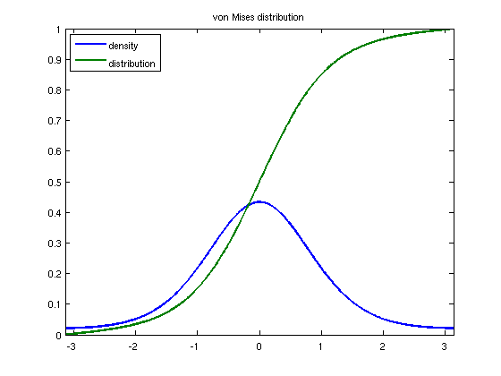
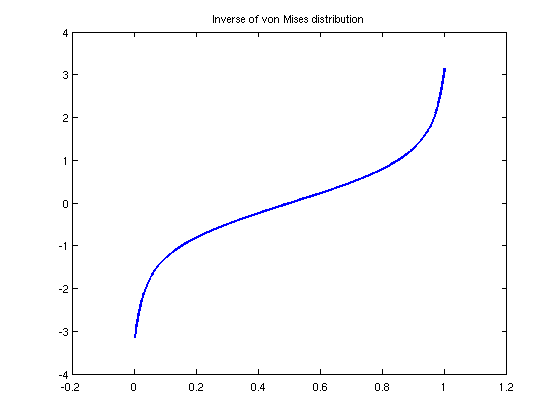
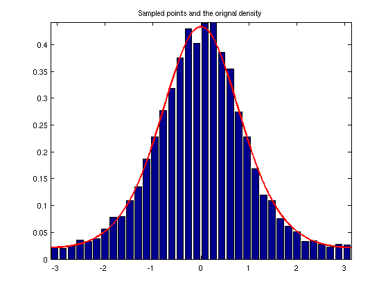
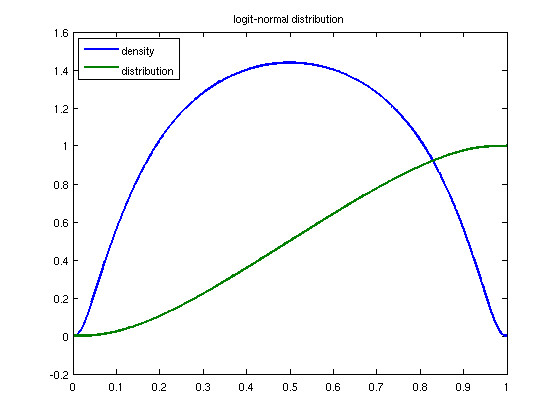
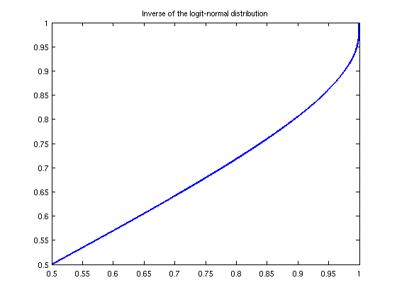
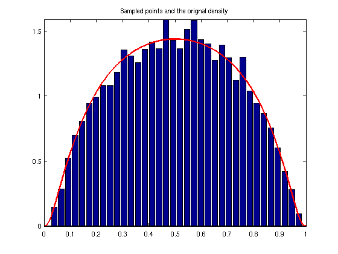

Resampling of random variables
Toby Driscoll, 8th December 2011
Contents
(Chebfun example stats/ResamplingRandomVariables.m)
One common problem in applications of random variables is to draw samples from a given distribution. It's easy to find functions for generating pseudorandom numbers that are distributed uniformly or normally, and these usually must be converted to simulate a different target distribution. The key steps are integration and function inversion, which Chebfun can do with great accuracy.
LW = 'linewidth'; FS = 'fontsize'; MS = 'markersize'; splitting off
von Mises distribution
The von Mises distribution is a periodic variant of the normal distribution. While the density is easily defined, it's otherwise not simple to work with analytically.
We start with the density function, normalized to give total probability 1.
kappa = 1.5; f = chebfun(@(x) exp(kappa*cos(x)),[-pi pi]); density = f/sum(f);
Now we integrate to get the cumulative distribution function.
cdf = cumsum(density); plot([density,cdf],LW,2), axis([-pi pi 0 1]) title('von Mises distribution') legend('density','distribution','Location','northwest')
Sampling from this distribution involves applying the inverse of it to uniformly sampled points. We could do this one-by-one using ROOTS, but for a large number of points it will be more efficient to find a representation of the inverse function. We use INV2 for this.
cdfinv = inv2(cdf);
plot(cdfinv,LW,2)
title('Inverse of von Mises distribution')
 Now the resampling is easy. We compare the resulting histogram to the original von Mises density.
u = rand(1e4,1); % uniform x = cdfinv(u); % von Mises [count,bin] = hist(x,36); count = count/sum(count*(bin(2)-bin(1))); % renormalize, total area = 1 cla, bar(bin,count), hold on plot(density,'r',LW,2), axis tight title('Sampled points and the orignal density')
Logit-normal distribution
A more exotic and troublesome distribution is the logit-normal distribution. Its density and cdf are easy enough to define:
sig = 1.11; f = @(x) exp( -(log(x./(1-x))).^2/(2*sig^2))./(x.*(1-x)); density = chebfun(f,[0 1]); density = density/sum(density); cdf = cumsum(density); clf, plot([density,cdf],LW,2) title('logit-normal distribution') legend('density','distribution','Location','northwest')
However, because F'=f=0 at the ends, the inverse function has vertical asymptotes at the ends, and a straightforward inversion will fail. To cope with this, we'll take some shortcuts. First, we'll use symmetry to restrict attention to x greater than 1/2. Second, we'll put Chebfun into splitting mode to help cope with the endpoint slope. Finally, we'll truncate the domain of the cdf slightly.
splitting on cdfinv = inv2( cdf{0.5,1-1e-3} ); clf,plot(cdfinv,LW,2) title('Inverse of the logit-normal distribution')
To apply the result for resampling, we have to reflect uniform values less than 1/2 back into [1/2,1], and reflect the results back.
u = rand(1e4,1); flag = (u < 0.5); u(flag) = 1-u(flag); x = cdfinv( u ); x(flag) = 1-x(flag); [count,bin] = hist(x,36); count = count/sum(count*(bin(2)-bin(1))); % renormalize, total area = 1 clf, bar(bin,count), hold on plot(density,'r',LW,2), axis tight title('Sampled points and the orignal density')
We can see what our truncation of the orignal random variable costs us by looking at the domain of the inverse cdf:
cdfinv.ends.' missing = 1 - ans(end)
ans =
0.500000000000000
0.994999999757494
0.999949999755069
0.999999499755045
0.999999749755045
0.999999874755044
0.999999999755044
missing =
2.449555003281034e-10
Thus, a uniform variable that takes a value closer to 1 than this number won't be mapped accurately back to the logit-normal variable we want, unless we take further steps. Clearly, such events will be extremely rare.